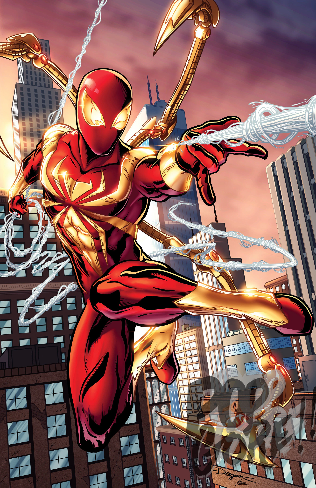
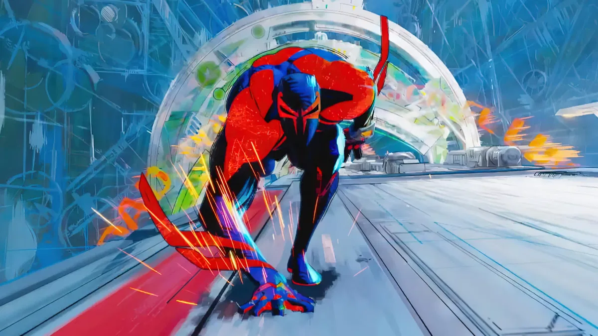
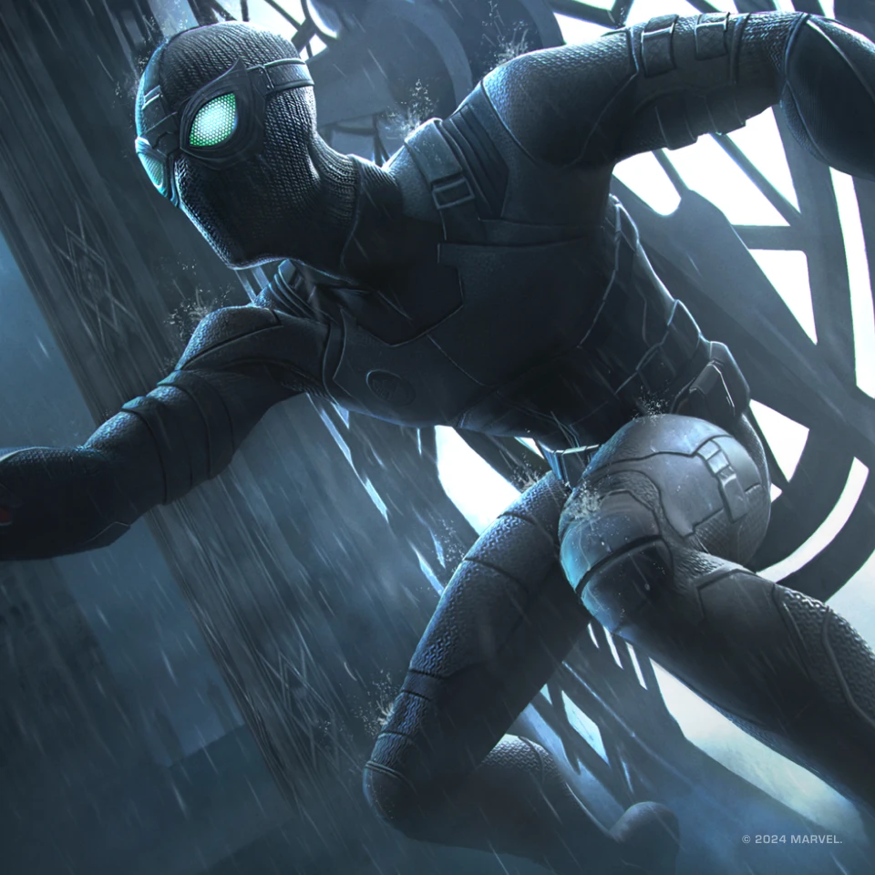

Es el más reconocido de Spider-Man. Con su diseño rojo y azul, representa la esencia del héroe desde su
primera aparición en 1962.
Es el más reconocido de Spider-Man. Con su diseño rojo y azul, representa la esencia del héroe desde su
primera aparición en 1962.
 El traje negro marcó una de las
etapas más intensas en la vida de Spider-Man. Originado a partir de un simbionte alienígena, este traje
aumentaba su fuerza, velocidad y agresividad, pero también influía en su personalidad, volviéndolo más
impulsivo y oscuro. Aunque al principio parecía una mejora, Peter Parker descubrió que el simbionte
intentaba fusionarse permanentemente con él, lo que lo llevó a rechazarlo.
El traje negro marcó una de las
etapas más intensas en la vida de Spider-Man. Originado a partir de un simbionte alienígena, este traje
aumentaba su fuerza, velocidad y agresividad, pero también influía en su personalidad, volviéndolo más
impulsivo y oscuro. Aunque al principio parecía una mejora, Peter Parker descubrió que el simbionte
intentaba fusionarse permanentemente con él, lo que lo llevó a rechazarlo.

El traje Iron Spider fue diseñado por Tony Stark y representa la unión entre la tecnología avanzada y la identidad heroica de Peter Parker. Con brazos metálicos desplegables, sensores mejorados y una protección superior, este traje llevó a Spider-Man a un nuevo nivel de capacidad táctica. Más allá de sus mejoras tecnológicas, el Iron Spider simboliza una etapa en la que Peter se enfrenta a decisiones difíciles sobre su independencia, su relación con los Vengadores y el tipo de héroe que quiere ser.
El traje de Spider-Man 2099 pertenece a Miguel O’Hara, un científico del futuro que adopta el legado del héroe en un mundo mucho más oscuro y tecnológico. Fabricado con fibras inestables y equipado con garras retráctiles, visión mejorada y un diseño aerodinámico, este traje refleja la dureza del entorno futurista en el que Miguel lucha. Su estética azul y roja, junto con su capa de telaraña rígida, lo convierten en uno de los diseños más distintivos del multiverso arácnido.
El traje Stealth fue creado para misiones en las que Spider-Man necesitaba pasar desapercibido o evitar ser detectado por tecnología avanzada. Con capacidades de camuflaje, absorción de sonido y modos de luz especiales, este traje demuestra la versatilidad del héroe cuando enfrenta amenazas que requieren más estrategia que fuerza. Su diseño oscuro y minimalista refleja una faceta más táctica y calculadora del personaje. El traje avanzado, popularizado
por los videojuegos de Spider-Man para PS4 y PS5, combina elementos clásicos con un toque moderno. Su
característica araña blanca simboliza una nueva etapa en la vida del héroe, más madura y experimentada.
Este traje representa la evolución natural de Peter Parker, mostrando que puede reinventarse sin perder
su esencia. Es un homenaje al pasado y una mirada al futuro del personaje.
El traje avanzado, popularizado
por los videojuegos de Spider-Man para PS4 y PS5, combina elementos clásicos con un toque moderno. Su
característica araña blanca simboliza una nueva etapa en la vida del héroe, más madura y experimentada.
Este traje representa la evolución natural de Peter Parker, mostrando que puede reinventarse sin perder
su esencia. Es un homenaje al pasado y una mirada al futuro del personaje.
 El traje de Scarlet Spider,
utilizado por Ben Reilly, destaca por su diseño sencillo pero icónico: un mono rojo con una sudadera
azul sin mangas. Este traje simboliza la búsqueda de identidad de Ben, un clon de Peter Parker que lucha
por encontrar su propio camino como héroe. Su apariencia improvisada refleja su origen humilde y su
deseo de diferenciarse del Spider-Man original.
El traje de Scarlet Spider,
utilizado por Ben Reilly, destaca por su diseño sencillo pero icónico: un mono rojo con una sudadera
azul sin mangas. Este traje simboliza la búsqueda de identidad de Ben, un clon de Peter Parker que lucha
por encontrar su propio camino como héroe. Su apariencia improvisada refleja su origen humilde y su
deseo de diferenciarse del Spider-Man original.